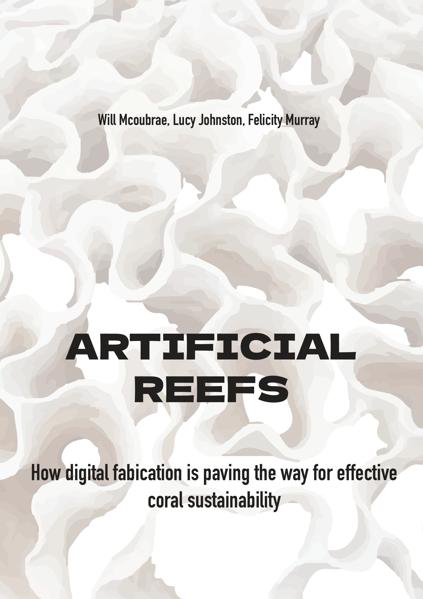
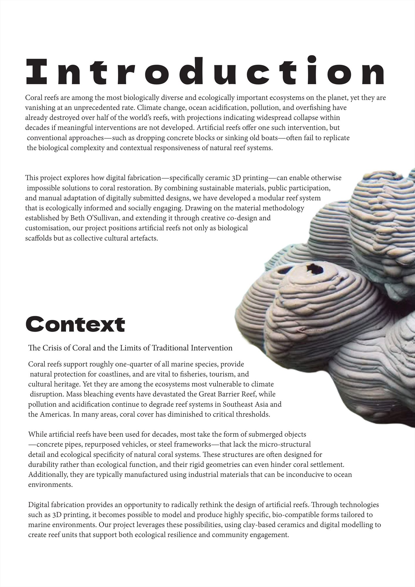
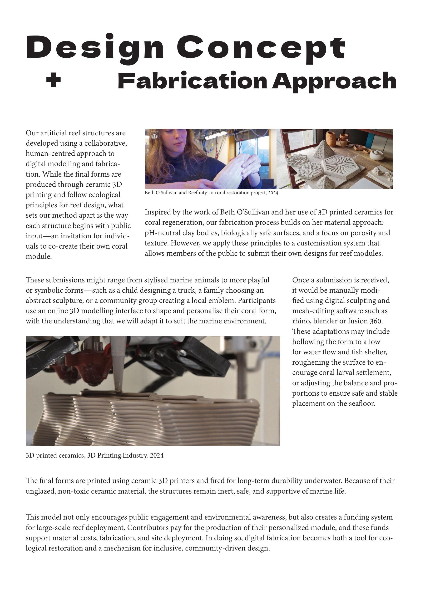
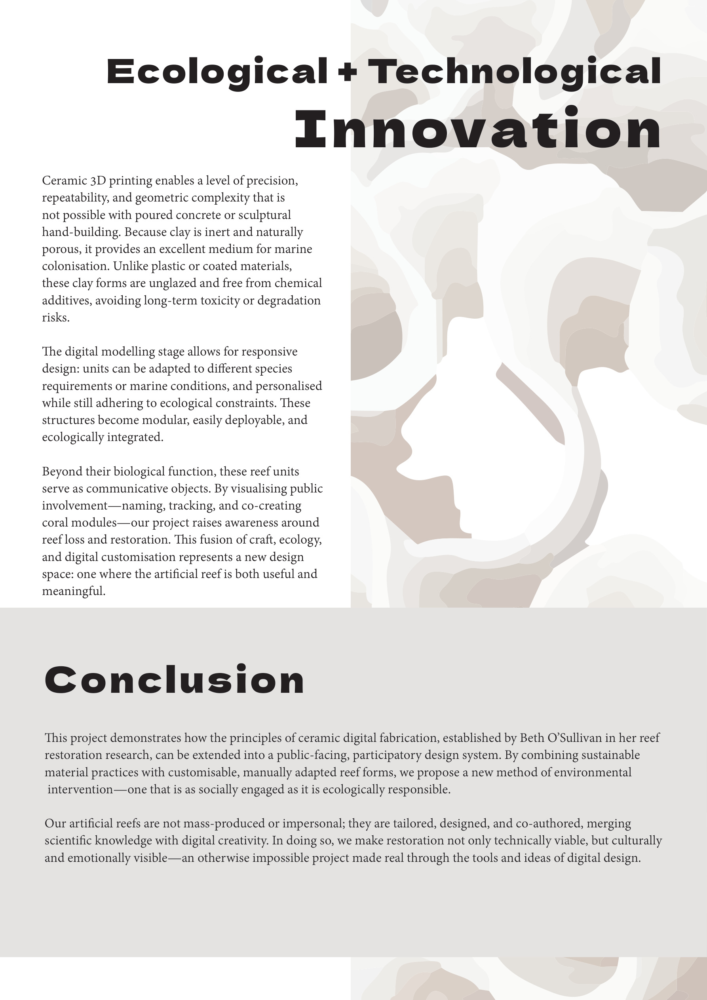

DESIGN / 05
Artificial Reef Proposal
- WORK
- Speculative community-designed marine restoration system
- YEAR
- 2025
- MEDIUM
- Participatory design · Ceramic 3D printing concept · Digital customisation · Environmental communication
- CONTEXT
- Group university project · ANU DESN2001

Overview
Artificial Reef Proposal explores how ceramic 3D printing and community participation could support a new model of marine habitat restoration. Developed collaboratively with Lucy Johnston and Felicity Murray, it proposes reef modules that members of the public could help customise through a digital design platform.
The concept responds to environmental damage to natural coral reefs and the funding pressures often faced by restoration projects. It imagines an artificial reef that functions both as proposed habitat infrastructure and as a publicly supported underwater sculpture gallery.
Design Brief
Explore an otherwise difficult or impossible design opportunity made more feasible by emerging digital fabrication methods. Our chosen direction was to combine ecological principles for artificial reefs with a participatory funding and design model.
Rather than simply asking people to donate, the proposal invited them to personalise a sculptural marine module. A design team would then modify submitted forms to meet requirements for structure, material suitability and habitat provision.


Process
Our group investigated artificial reef structures, digital modelling and ceramic 3D-printing precedents, then explored multiple directions. An alternative generative-design approach looked at reef structures that mimic naturally occurring forms; the final concept instead focused on public co-design and participation.
In the proposed system, visitors would use a web-based interface to customise a sculptural reef module. Designers would adjust submissions to support appropriate cavities, surface textures, water flow and stable positioning before producing them with suitable ceramic fabrication methods.
We developed the conceptual framework, proposal materials and presentation. I collaborated across the design and communication work, but was not responsible for the project’s research component. These pages are designs from our report and incorporate third-party reference images; they do not depict reef modules we fabricated.

Outcome
The final outcome was a speculative design proposal for a community-funded artificial reef, with individually designed modules and an envisioned underwater gallery that could create public interest in marine conservation.
No physical coral modules were produced or deployed as part of this university project. Its outcome was a proposal and set of design ideas, not verified ecological performance or an implemented restoration programme.